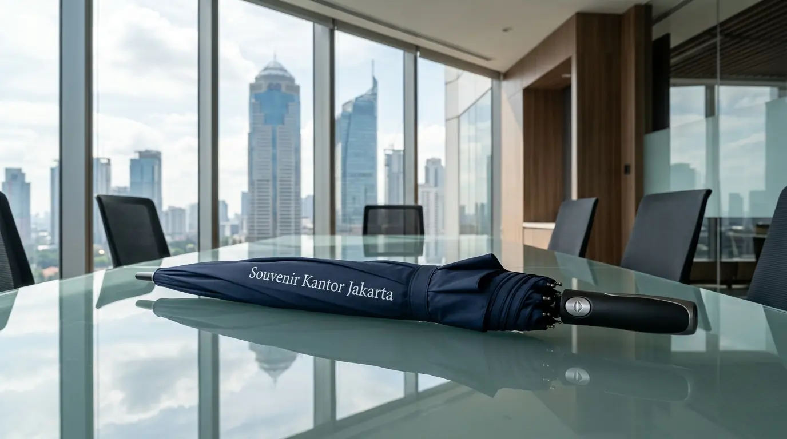

Payung Souvenir Kantor Custom Logo untuk Perusahaan
 Tim Redaksi Souvenir Kantor Jakarta
8 September 2026
5 Menit Baca
Tim Redaksi Souvenir Kantor Jakarta
8 September 2026
5 Menit Baca
Payung souvenir kantor adalah media cenderamata kustom berlogo instansi yang digunakan untuk promosi bisnis, corporate gift, dan kebutuhan event perusahaan.
- Produk payung kustom logo merupakan media cenderamata paling diminati karena memberikan perlindungan cuaca sekaligus visibilitas merek yang sangat luas di area publik.
- Material kain pongee atau silver-coating anti-UV dengan kerangka fiber anti-angin mendominasi pilihan perusahaan karena daya tahan penggunaan yang sangat lama.
- Kustomisasi logo menggunakan teknik cetak sablon presisi atau digital print memberikan hasil tampilan visual merek yang tahan lama dan tidak gampang luntur.
- Pengadaan terpusat secara grosir menjamin efisiensi alokasi anggaran operasional serta kepastian pengiriman untuk tenggat acara perusahaan.
Jawaban Singkat untuk Pengadaan Perusahaan
- Mengapa Payung Souvenir Kantor Sangat Efektif untuk Promosi Perusahaan dan Event Bisnis?
- Jenis Bahan Kain dan Kerangka Payung Souvenir Kantor Apa Saja yang Paling Populer?
- Tabel Perbandingan Bahan Kain & Kerangka Payung Promosi Perusahaan
- Teknik Kustomisasi Logo Mana yang Paling Tahan Lama untuk Payung Souvenir Perusahaan?
- Kesalahan Apa Saja yang Wajib Dihindari Saat Memesan Payung Souvenir Kantor?
- Pertanyaan Umum Seputar Payung Souvenir Kantor (FAQ)
- Kesimpulan Praktis
Mengapa Payung Souvenir Kantor Sangat Efektif untuk Promosi Perusahaan dan Event Bisnis?
Payung souvenir kantor sangat efektif untuk promosi perusahaan karena memberikan nilai guna tinggi, memperluas jangkauan promosi outdoor, dan membangun citra kepedulian instansi.
Berdasarkan Laporan Industri Merchandise Corporate Indonesia 2025/2026, penggunaan barang cenderamata pelindung cuaca menghasilkan skor retensi merek (brand recall) hingga 89% di kalangan penerima. Angka ini membuktikan bahwa cenderamata fungsional jauh lebih berdampak dibandingkan media promosi cetak sekali pakai. Selain itu, faktor cuaca tropis Indonesia menjadikan payung kustom sebagai barang cenderamata fungsional yang senantiasa dibawa dalam mobilitas harian.
Berikut adalah keunggulan utama memilih produk ini untuk cenderamata instansi Anda:
- Visibilitas Merek Outdoor yang Luas: Bentuk payung yang lebar saat dibentangkan menjadikan logo instansi Anda dapat terlihat jelas oleh masyarakat luas dari jarak jauh di berbagai tempat umum seperti trotoar, halte, kawasan perkantoran, dan area parkir.
- Meningkatkan Retensi Hubungan Bisnis: Menurut data Asosiasi Industri Merchandise Indonesia (AIMI) periode 2025/2026, pemberian cenderamata promosi fungsional mampu meningkatkan ikatan profesional mitra hingga 87% dalam jangka panjang karena penerima merasa dihargai dengan hadiah yang memiliki manfaat nyata.
- Efisiensi Anggaran Pengadaan: Biaya produksi satuan yang terjangkau dengan usia pakai yang panjang memberikan nilai investasi promosi (return on investment) yang sangat ekonomis dibandingkan iklan berbayar konvensional.
Jenis Bahan Kain dan Kerangka Payung Souvenir Kantor Apa Saja yang Paling Populer?
Jenis bahan kain dan kerangka payung souvenir kantor yang paling populer meliputi kain pongee anti-UV, bahan polyester lapis silver, kerangka fiber tahan angin, dan stik besi hitam.
Memilih kombinasi bahan kain dan kerangka yang tepat sangat menentukan tingkat keawetan produk saat diterjang angin kencang maupun hujan deras. Data Asosiasi Industri Merchandise Indonesia (AIMI) periode 2025/2026 mencatat bahwa 68% pemesanan korporat memilih varian payung golf dengan kerangka fiber sintetis.
Berikut adalah karakteristik dari masing-masing tipe bahan dan model payung instansi:
Payung Golf Otomatis Fiber Frame
Menyajikan ukuran bentangan paling luas (diameter hingga 130 cm) dengan tombol pembuka otomatis. Kerangka fiber yang elastis membuat ranting payung tidak mudah patah saat tertiup angin kencang. Pilihan utama untuk eksekutif dan VIP.
Payung Lipat 3 dan Lipat 2 Ringkas
Mengedepankan kepraktisan ukuran yang ringkas sehingga mudah dimasukkan ke dalam tas kerja karyawan. Menggunakan bahan kain pongee lapis anti-UV yang tahan air dan cepat kering, ideal untuk seminar kit dan gathering karyawan.
Payung Terbalik (Reverse Umbrella)
Model inovatif dengan mekanisme lipatan terbalik yang menjaga air hujan tertampung di bagian dalam. Sangat nyaman digunakan saat keluar masuk kendaraan pribadi tanpa membasahi interior mobil dan pakaian.
Tabel Perbandingan Bahan Kain & Kerangka Payung Promosi Perusahaan
| Model Payung | Pilihan Kain | Material Kerangka | Diameter Bentang | Rekomendasi Penggunaan |
|---|---|---|---|---|
| Payung Golf Otomatis | Pongee Premium 190T / Double Layer | Fiberglass Elastis Anti-Patah | 125 – 135 cm | Corporate Gift VIP, Hadiah Direksi, Event Golf |
| Payung Lipat 3 Custom | Polyester Silver-Coating Anti-UV | Stik Besi Hitam & Ranting Alumunium | 95 – 100 cm | Onboarding Karyawan, Seminar Kit, Gathering |
| Payung Lipat 2 Elegan | Pongee High-Density Water Repellent | Besi Chrome Kokoh / Semi-Fiber | 105 – 110 cm | Merchandise Promosi, Souvenir Pelanggan Setia |
| Payung Terbalik (Reverse) | Double Layer Pongee Breathable | Fiberglass Skeleton & Gagang C-Shape | 110 – 115 cm | Pengemudi Mobil, Event Otomotif, Gift Premium |

Teknik Kustomisasi Logo Mana yang Paling Tahan Lama untuk Payung Souvenir Perusahaan?
Teknik kustomisasi logo yang paling tahan lama untuk payung souvenir perusahaan adalah sablon presisi multi-panel dan cetak digital transfer tahan air.
Kejelasan dan estetika cetakan logo pada panel kain payung menjadi cerminan langsung profesionalisme instansi Anda. Kesalahan memilih teknik kustomisasi dapat menyebabkan cat cetakan mengelupas atau luntur akibat gesekan kain dan lipatan yang rapat.
- Sablon Presisi Cat Rubber: Menggunakan formulasi cat karet sintetis khusus yang merekat kuat pada serat kain waterproof dan tetap fleksibel saat kain dilipat berulang kali tanpa risiko retak atau pecah.
- Digital Sublimation / Film Transfer: Metode pencetakan warna penuh (full color) dengan resolusi tinggi yang sangat cocok untuk cetakan desain logo bergradasi warna kompleks atau ilustrasi grafis tematik event korporat.
- Cetak Logo pada Handle & Cover: Penambahan cetakan logo atau grafir laser pada bagian gagang pegangan (kayu atau busa EVA) dan sarung pembungkus (pouch) payung untuk memberikan impresi eksklusif yang menyatu.
Kesalahan Apa Saja yang Wajib Dihindari Saat Memesan Payung Souvenir Kantor?
Kesalahan yang wajib dihindari saat memesan payung souvenir kantor adalah menyetujui produksi massal tanpa cek sampel fisik, mengabaikan ketahanan kerangka angin, dan memesan terlalu mendadak.
Pengadaan barang cetakan berskala besar membutuhkan pengawasan ketat agar tidak menimbulkan kekecewaan di kemudian hari:
1. Tanpa Cek Sampel
Memulai produksi massal ribuan unit tanpa melihat sampel nyata (physical proofing) berisiko menyebabkan ketidaksesuaian warna Pantone logo atau posisi sablon pada panel payung.
2. Kerangka Ringkih
Memilih kerangka besi tipis kualitas rendah demi harga murah berisiko membuat ranting payung cepat berkarat dan gampang patah saat diterjang angin kencang.
3. Waktu Terlalu Mepet
Pengerjaan cetak sablon panel dan proses pengeringan tinta waterproof membutuhkan waktu yang ideal agar cat sablon tidak saling menempel atau membekas saat payung dilipat.
Segera hindari seluruh risiko tersebut dengan mempercayakan pemesanan cenderamata instansi Anda kepada Souvenir Kantor Jakarta yang memberikan jaminan garansi penggantian unit baru, layanan sampel fisik sebelum produksi massal, dan ketepatan jadwal kirim.
Wujudkan Payung Souvenir Kantor Custom Logo Terbaik
Konsultasikan konsep payung promosi perusahaan Anda bersama tim spesialis Souvenir Kantor Jakarta. Dapatkan penawaran harga grosir terjangkau, gratis mockup visual digital, dan sampel fisik untuk pengadaan perusahaan Anda hari ini.
Konsultasi Souvenir Kantor JakartaPertanyaan Umum Seputar Payung Souvenir Kantor (FAQ)
Kesimpulan Praktis
Pemesanan payung souvenir kantor custom logo merupakan langkah investasi promosi yang sangat efektif untuk memperluas visibilitas merek sekaligus memberikan perlindungan nyata bagi mitra dan karyawan. Melalui pemilihan material kain yang tahan air, kerangka fiber yang kokoh, dan kemasan sarung yang menawan, citra perusahaan Anda akan terangkat secara positif.
Dapatkan penawaran grosir terbaik dan pelayanan profesional dengan menghubungi Souvenir Kantor Jakarta sekarang juga untuk mewujudkan cenderamata bisnis berkualitas tinggi dan bergaransi resmi.